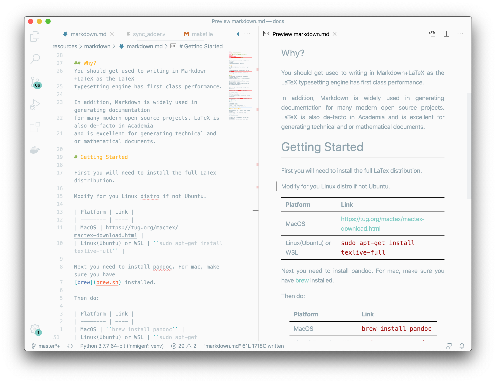

Markdown to LaTeX+PDF with Pandoc
Author: Yehowshua Immanuel
PDF VersionWhat?¶
You can write your assignments in Markdown and render them into PDF. That's how this website was built.
How?¶
The Python MkDocs builder consumed the markdown and emitted HTML. You'll also notice that each page has a PDF link.
This was accomplished by a post-build run the used pandoc to run over the markdown again and generate PDFs using LaTeX.
Why?¶
You should get used to writing in Markdown+LaTeX as the LaTeX typesetting engine has first class performance.
In addition, Markdown is widely used in generating documentation for many modern open source projects. LaTeX is also de-facto in academia and is excellent for generating technical and or mathematical documents.
Getting Started¶
First you will need to install the full LaTex distribution.
Modify for you Linux distro if not Ubuntu.
| Platform | Link |
|---|---|
| MacOS | https://tug.org/mactex/mactex-download.html |
| Linux(Ubuntu) or WSL | sudo apt install texlive-full |
Next you need to install pandoc. Make sure you have brew installed.
brew install pandocFinding a Suitable Editor¶
Next you want to find a suitable editor to help you edit
your markdown. I like VsCode. It has an especially good
markdown mode which is accessible with command +
shift + v on Mac, or ctrl+shift+v on PC.
I like to have preview mode on one side, and the markdown editor mode on the other using VsCode split screen.

Creating a PDF¶
Paste the following into a file called:
test.md¶
---
author: John Doe
date: January 1, 2020
geometry: margin=1in
title: Sample Markdown to LaTeX+PDF with Pandoc
header-includes:
- \hypersetup{colorlinks=true}
---
# 1.
I really like computer architecture. I like computer
architecture more than:
- money
- gold
- cars
- iPhones
## This is a subsection
The proper procedure for starting a new computer architecture
design involves:
1. Coming up with the high-level design sketch
2. Initsialising your code space with git VCS
3. Designing each module one by one
4. Commiting changes to git often
4. Always writing unit-tests or testbenches for your
code
# 2.
Open source isn't free - its often funded by institutions.
This is a table:
| Project | Roots |
|--------------|----------------------------|
| Verilator | DEC. |
| BSD Unix | Berkeley |
| Clang | Apple, Berkeley University |
| Clang | Berkeley |
| Chisel | Berkeley |
| R | Berkeley |
| Berkeley Sockets | Berkeley |
| GCC | MIT |
| Xorg | MIT |
| Bluespec | MIT |
| MIPS | Stanford |
| ROS | Stanford |
| Theano | University of Montreal |
| Firefox | Netscape, Google |
| TypeScript | Microsoft |
| Linux Kernel | RedHat, IBM, Google |
| Chromium | Google |
| Android | Google |
# This is a third section
## Python
Python is a great language for rapid prototyping
and unit-testing.
Although Python is itself slow, it is often
coupled with speedy C/C++ backends allowing
for the best of both worlds.
One example of such is Python numpy.
### Sub-subsection
Some python code
```python
def sum(a,b)
return a+b
```
Now run the command:
pandoc -s test.md -o test.pdfNow open test.pdf.
Notice how the Python syntax is highlighted for you.